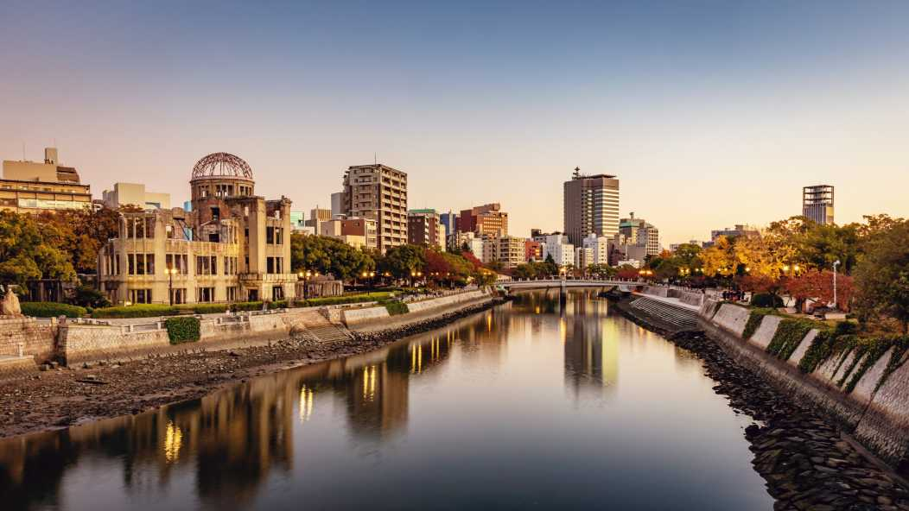

Hiroshima
Hiroshima est une ville japonaise côtière donnant sur la mer intérieure de Seto, située sur l'île principale Honshu et capitale de la préfecture éponyme. Tristement célèbre pour avoir subi le premier bombardement atomique de l'Histoire le 6 août 1945, précipitant la fin de la Seconde Guerre mondiale, la ville aujourd'hui totalement reconstruite est la plus grande de la région de Chugoku.
De nos jours, c'est une grande ville du Japon qui est bien sûr totalement rebâtie mais, si les stigmates de ce triste passé sont en apparence discrètes, elle n'a pas oublié son histoire ancienne et moderne. En son cœur se situe le grand parc de la paix qui regroupe notamment le dôme de la bombe A (dont la structure a survécu au souffle de l'explosion) ainsi que le Musée éponyme et ses poignants témoignages. Non loin, on trouve également une belle reconstruction de son château féodal entouré par les douves.
Autour, la ville sait ne pas se reposer uniquement sur ce mémorial : sorti du parc, les enfants jouent, le tram raccompagne les salary-men (employés de bureaux) chez eux et les lycéens se chamaillent dans les rues. Car au-delà de cette leçon d’humanité, Hiroshima est une ville industrielle et portuaire, construite sur une rivière dont les bras la jonchent de part en part.
Lors de votre visite, n’oubliez pas de goûter la spécialité locale : okonomiyaki, une galette de sarrasin fourrée aux nouilles, au poisson (ou à la viande) et aux légumes.